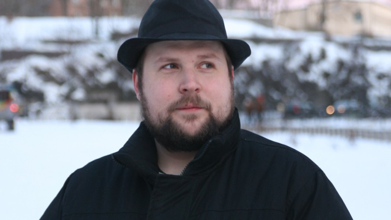

Родился 1 июня , 1979- шведский программист и игровой дизайнер.
Перссон был владельцем компании видеоигр Mojang , которую он основал вместе с Карлом Манни и Якобом Порсером в конце 2010 года. В 2009 году Перссон выпустил демо версию своей известной игры Minecraft , которая принесла ему известность. С момента выхода Minecraft Перссон получил большую популярность в индустрии видеоигр, завоевав ряд наград. В 2011 году Маркус покинул пост главного дизайнера Minecraft и передал творческие полномочия Енсу Бергенстену.
Первые семь лет своей жизни жил в Дании, пока не переехал с родителями в Стокгольм. Пошел в школу уже в Швеции. В возрасте семи лет начал программировать на домашнем компьютере своего отца Commodore 128. Свою первую текстовую приключенческую игру разработал в восемь лет. Четыре года работал программистом в King.com, до 2009 года. Для King.com разработал такие игры как «Funny Farm», «Luxor» и «Carnival Shootout». После этого непродолжительное время работал программистом в jAlbum. Также является одним из основателей Wurm Online, Однако больше не работает над этим проектом. Создал несколько игр для соревнования Java 4K Game Programming Contest, например «Left 4K Dead», «Mega 4K Man». Участвовал в конкурсе Ludum Dare. 15 сентября 2014 Перссон продал Mojang корпорации Microsoft за 2.5 миллиарда долларов США, после чего покинул команду.
Самым известным творением Перссона стала игра жанра песочнице Minecraft , выпущенная 18 ноября 2011 года. Для того чтобы полностью посвятить себя разработке игры Minecraft и довести ее до завершения, Перссон оставил свою должность игрового дизайнера в Mojang AB. В начале 2011, вышеупомянутая студия продала миллионную копию игры Minecraft, через несколько месяцев - второй миллион, через пару месяцев - третий. Mojang наняли нескольких новых помощников для команды Minecraft, в то время как Перссон отдал свое место Енсу Бергенстену . Впоследствии, было тоже выпущено и карманные версии для Android и IOS , а 9 мая 2012 года версию Minecraft для Xbox 360, Выпущенную вместе с обновлением, которое придало режим обучения и набор из нескольких графических моделей персонажа (скинов).
Minecraft
Minecraft получила всеобщее признание среди игровой прессы и множество наград. Критики выделили такие основные достоинства, как реиграбельность, минималистичный дизайн, динамичный саундтрек и большую свободу творчества, ограниченную лишь фантазией игрока; недостатками они посчитали наличие недоработанных предметов и сложности с созданием сетевой игры, а также отсутствие в игре режима обучения. Разработчики устранили эти недостатки в последующие годи. На лето 2020 года было продано более 200 миллионов копий на всех платформах, что делает Minecraft самой продаваемой игрой в истории, и 132 миллиона игроков запускали игру хотя бы раз в месяц. В популяризации и коммерческом успехе Minecraft большую роль сыграли пользовательский контент, в том числе видеоролики, распространяемые через YouTube, и множество сторонних модификаций. На сегодняшний день Minecraft представляет собой целую франшизу, включающую в себя, помимо основной игры, такие игры как Minecraft: Story Mode, Minecraft Earth и Minecraft Dungeons.
Перед началом игры нужно выбрать параметры для процедурной генерации мира. Игрок может ввести начальное значение для генератора псевдослучайных чисел, позволяющего создавать уникальные и неповторяющиеся миры; это значение называется «сидом». Если игрок не введёт это значение, то игра сделает это автоматически, используя для начального значения время на системных часах Поэтому, если игрок создаст два мира с одинаковыми значениями, то такие миры также будут одинаковы. Таким образом создаётся игровой мир, состоящий из расставленных в фиксированном порядке кубов, и у такого мира практически нет ограничений в пространстве. Игровой мир делится на различные биомы, у каждого из которых есть свои погода и объекты. Дно мира состоит из каменного основания, который можно сломать только в творческом режиме.В начале игры игровой персонаж появляется на поверхности земли в случайном биоме — например, в пустыне, горах, равнинах, лесу и так далее. В Minecraft нет каких-либо конкретных целей или сюжета — она строится на том, чтобы игрок импровизировал во время игрового процесса.
По мере прохождения Minecraft игрок будет получать достижения за выполнения определённых действий. По умолчанию игрок управляет персонажем в режиме от первого лица, но игрок также может переключиться на режим от третьего лица. Сам мир состоит из трёхмерных объектов, которые в игре называются блоками, и такие блоки различаются между собой текстурой, физикой и другими признаками. Игровой процесс в целом строится на добыче и размещении блоков.